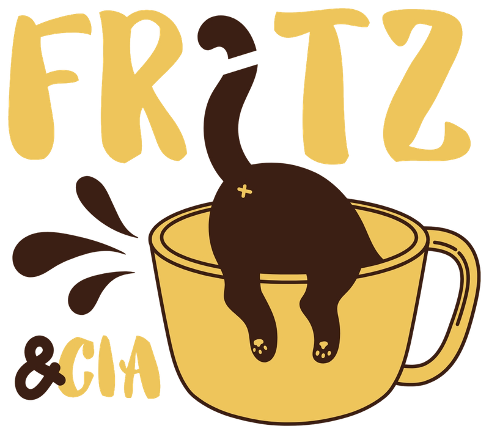
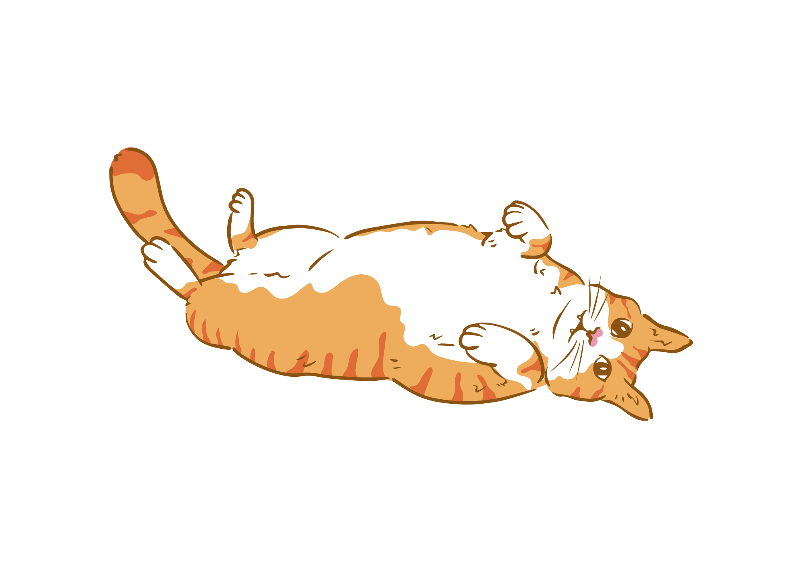
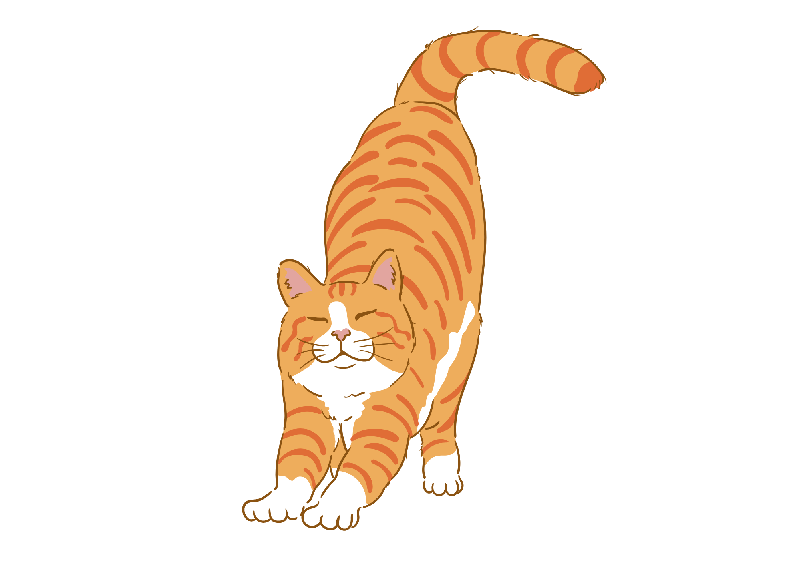
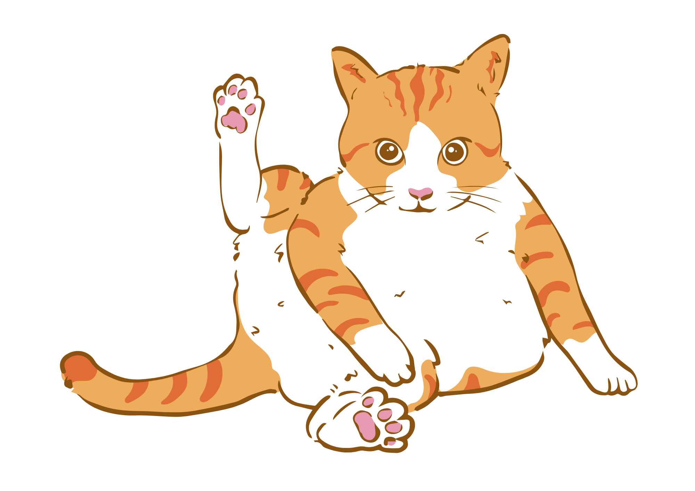

Ronda do Fritz
Assim como o Fritz fazia a ronda pelo bairro, nossa equipe sai atrás de gatinhos que precisam de ajuda. Cada resgate começa com alguém avisando que viu um bichinho magrinho pela rua.

A nossa visita mais esperada.

Fritz era um gatinho laranja de rua que vivia no nosso bairro. Nunca foi dono de ninguém e era amigo de todo mundo. Lembro bem da primeira vez que ele apareceu: magrinho, magrinho...
Ele costumava chegar na hora do café da tarde. Aos poucos, o nosso café foi ganhando um lugar pra ele, e o Fritz foi ganhando uma pancinha. Virou a visita mais esperada da semana.
O Fritz nunca teve uma casa só dele, mas sempre tinha pra onde voltar. Foi com ele que aprendemos que todo gatinho merece um lugar onde chegar, nem que seja só pra tomar um cafezinho.
Resgatamos gatinhos, cuidamos deles até estarem prontos e ajudamos cada um a encontrar a sua casa, seja através da adoção ou recebendo gatinhos para doação.
Assim como o Fritz fazia a ronda pelo bairro, nossa equipe sai atrás de gatinhos que precisam de ajuda. Cada resgate começa com alguém avisando que viu um bichinho magrinho pela rua.
Aqui os resgatados comem, tomam vacina, são castrados e ganham uma pancinha, igual ao Fritz. Ficam no Cantinho até estarem saudáveis e prontos pra ir pra casa.
É quando a visita vira morador. Ajudamos as famílias a encontrar o gatinho certo e acompanhamos a adaptação. Você também pode cadastrar um gatinho para doação.
Telefone: (51) 98551-6743
Porto Alegre, RS
Cada gatinho passa por três etapas até ganhar uma casa. Cada etapa é um projeto.

Seja voluntário, adote ou cadastre um gatinho para doação.
Quer ajudar, adotar ou doar um gatinho? Preencha os dados abaixo. Campos com * são obrigatórios.
